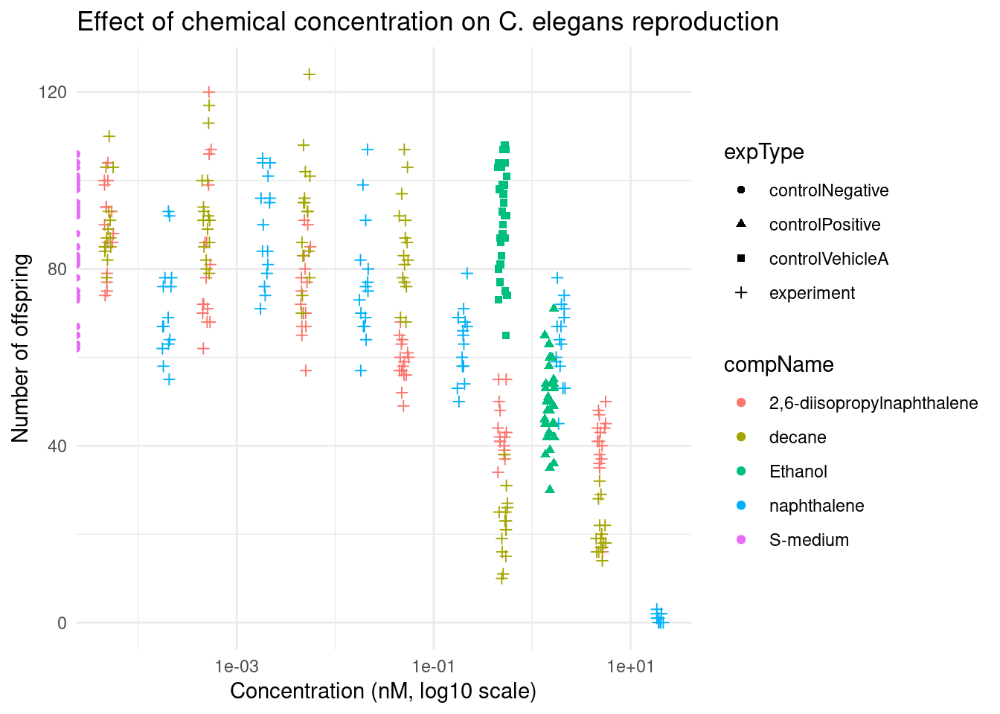
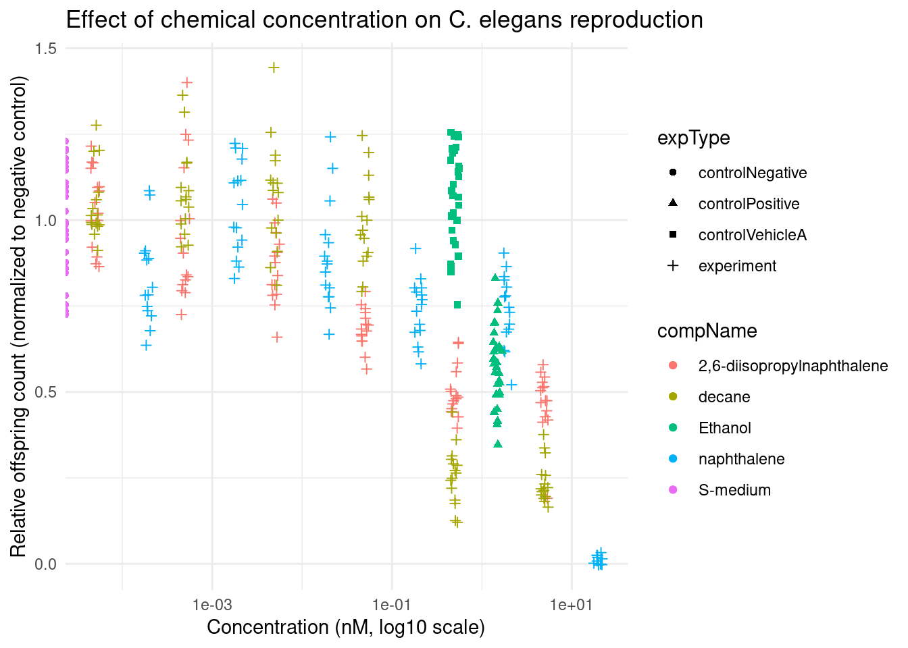

5 Reproducible Science
5.0.1 Read the data
C.elegans<- read_excel("~/dsfb2/dsfb2_workflows_portfolio/reproducible_science/data/CE.LIQ.FLOW.062_Tidydata.xlsx")
C.elegans <- C.elegans %>%
mutate(
compConcentration = as.numeric(compConcentration),
compName = as.factor(compName),
expType = as.factor(expType)
)## Warning: There was 1 warning in `mutate()`.
## ℹ In argument: `compConcentration = as.numeric(compConcentration)`.
## Caused by warning:
## ! NAs introduced by coercion5.0.2 Make a scatterplot
C.elegans <- C.elegans %>%
filter(!is.na(compConcentration))
ggplot(C.elegans, aes(x = compConcentration, y = RawData,
color = compName, shape = expType)) +
geom_point(position = position_jitter(width = 0.05, height = 0)) +
scale_x_log10() +
theme_minimal() +
labs(title = "Effect of chemical concentration on C. elegans reproduction",
x = "Concentration (nM, log10 scale)",
y = "Number of offspring")## Warning in scale_x_log10(): log-10 transformation introduced infinite values.## Warning: Removed 5 rows containing missing values or values outside the scale range
## (`geom_point()`).
Figure 1. Scatterplot showing the relationship between chemical concentration and reproductive output in C. elegans.*5.0.3 Scatterplot normalized data
neg_mean <- C.elegans %>%
filter(expType == "controlNegative") %>%
summarise(mean_val = mean(RawData, na.rm = TRUE)) %>%
pull(mean_val)
C.elegans_normalized <- C.elegans %>%
mutate(normData = RawData / neg_mean)
ggplot(C.elegans_normalized, aes(
x = compConcentration,
y = normData,
color = compName,
shape = expType
)) +
geom_point(position = position_jitter(width = 0.05),
na.rm = TRUE) +
scale_x_log10() +
theme_minimal() +
labs(title = "Effect of chemical concentration on C. elegans reproduction",
x = "Concentration (nM, log10 scale)",
y = "Relative offspring count (normalized to negative control)")## Warning in scale_x_log10(): log-10 transformation introduced infinite values.
Figure 2. Scatterplot showing the relationship between chemical concentration and reproductive output in C. elegans, with normalized data.*5.0.4 Analyse
5.0.4.1 Controls
The negative control is the condition in which C. elegans is not exposed to any chemical. This represents the baseline condition and serves as a reference value for the experiment.
The positive control is a condition in which C. elegans is exposed to a chemical with a known effect on reproduction, in this case ethanol. This control is used to verify that the experimental setup is functioning correctly and is capable of detecting an effect.
The vehicle control is a condition in which only the solvent (vehicle) is present, without any active chemical. This control is used to determine whether the solvent itself has any effect on the reproduction of C. elegans.
5.0.4.2 Normalization
The data were normalized to the negative control by dividing each observation by the mean value of the negative control group. As a result, the average response of the negative control is set to 1, and all other values are expressed as a fraction of this baseline.
This normalization reduces variability between measurements and allows for a more direct comparison between treatments. It ensures that observed effects are interpreted relative to normal biological conditions rather than absolute counts.
5.0.5 Dose–response analysis
The dose–response curve is used to estimate the IC50 value, defined as the concentration that reduces reproductive output by 50% relative to the control condition.
For IC50 estimation, each chemical is analysed separately. To construct the dose–response curve, the response variable is normalized and the concentration variable is ensured to be numeric.
Dose–response modelling is performed in R using the drc package. Several models are available; however, the four-parameter log-logistic model is commonly applied due to its suitability for sigmoidal dose–response relationships.
Following model fitting, the IC50 is derived using the ED() function, which calculates the effective dose corresponding to a predefined response level, in this case 50%.
Finally, IC50 values across different chemicals can be compared to assess relative toxicity. Lower IC50 values indicate higher potency, reflecting a stronger inhibitory effect on the reproductive output of C. elegans.
5.1 Article evaluation
5.1.0.1 Reference
Title: Predicting anti-cancer drug combination responses with a temporal cell state network model
Authors: Deepraj Sarmah,Wesley O. Meredith,Ian K. Weber,Madison R. Price,Marc R. Birtwistle
Link: https://journals.plos.org/ploscompbiol/article?id=10.1371/journal.pcbi.1011082
5.1.0.2 Research question and summary
This article describes a model that predicts drug combination responses in vitro for single cancer cell lines.
5.1.0.3 Methods
The authors used a Markov model of temporal cell state transitions. This model was used to determine whether a cell transitions to another state within an hour.
After that, they constructed dose–response curves using a sigmoidal Hill-type function. They also used Excess over Bliss (EOB) to evaluate drug synergy.
5.1.0.4 Results
The model was able to:
-predict drug combination responses more accurately than simpler or baseline approaches
-capture how cancer cells change state over time under treatment
-show that accounting for temporal cell-state dynamics improves predictions of drug synergy.
5.1.1 Reproducibility of the Article
The article includes a clearly stated study purpose, which can be found in the introduction.
The article also contains a data availability statement explaining how the data can be accessed.
The data can be downloaded from the supporting information.
The authors provide professional institutional affiliations and academic contact information, including a corresponding author email address.
No explicit ethics statement is included in the article. This is likely because the study is computational and uses existing in vitro cell line data, meaning that no human or animal subjects were directly involved.
The article also includes a funding statement indicating financial support for the project.
Finally, the code used in the study is available, allowing others to reproduce the analysis.